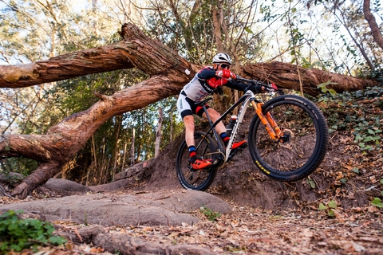

Andar en bici es importante porque te hace bien al cuerpo y a la cabeza. Te ayuda a moverte, a estar más en forma y a sentirte mejor. También sirve para despejarte y bajar un poco el estrés del día a día. Además, es una forma de moverte sin contaminar, así que también ayuda al medio ambiente.

Una bicicleta R32 es una bici con ruedas grandes (más grandes que las típicas R26 o R29). Están pensadas principalmente para personas altas, ya que el tamaño ayuda a que la postura sea más cómoda y natural.